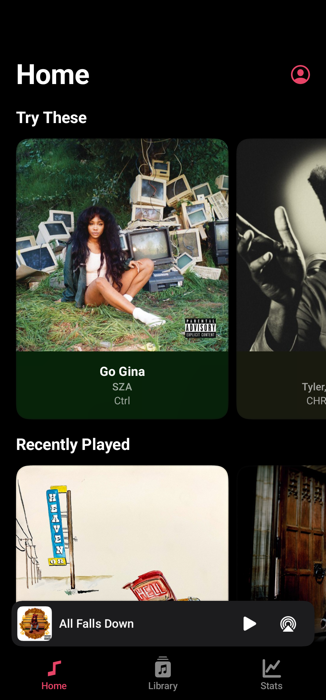
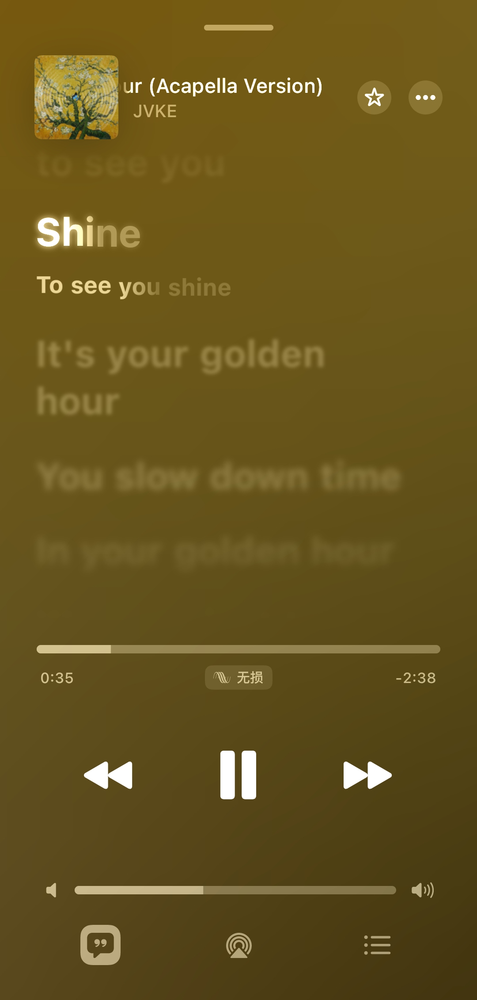

地铁通勤的那台播放器，终于不用再对着会员弹窗叹气
一个每天在地铁上待四十分钟的人，如何被一个完全本地、歌词还能逐字高亮的安卓播放器收了心——从找安装包到调电池白名单，全程折腾实录。
早上七点四十，我挤进上海二号线的车厢，耳机刚戴好，熟悉的那个在线 APP 又弹了个会员广告。不是那种挡半屏的弹窗，是更烦人的——它不阻止你听歌，但每切三首歌就插一次，声音还比我放的歌大。
我其实有一堆本地 FLAC，从大学时候攒到现在，两千多首，按专辑分在手机存储的一个文件夹里。之前用那个在线 APP 也不是因为它好，而是它扫本地歌还算顺手，歌词也能自动下。但最近几个月它越来越飘，本地扫库要等三十秒，歌词匹配不准就算了，有时候还把我藏在子文件夹里的歌漏掉。
那天在地铁上盯着那个会员弹窗叹气的时候，突然想起前几天在一个小众论坛里刷到过一个帖子，楼主说找了快一年终于找到个长得像 Apple Music 的安卓播放器，而且完全不用联网。我当时没留链接，只记住了它的官网地址和那个名字——Flamingo。
第一次启动：给权限、调电池、换头像
从官方下载拿到安装包点开，界面是真干净。主页底部三个 Tab，右上角一个圆形头像按钮——我当时没注意，后来才发现长按能换自己的图，仿 Apple Music 仿得很用心。
但第一次启动它要权限的时候我还是愣了一下。先是媒体访问，然后是通知，然后它弹了一句提示让我去系统设置里把电池优化关了。我当时嫌烦，通知权限给了但电池白名单没加，结果第二天地铁上就出事了——后台播放听了两首歌就被杀了，锁屏显示也消失。
后来才知道国产系统的省电策略真的狠，后台播放、歌词状态栏通知这些功能全靠一个"允许后台运行"。我打开系统设置找了半天，不同厂商叫法还不一样——小米叫自启动，OPPO 叫省电策略，华为叫后台弹窗。折腾了五分钟终于加上，之后后台就稳了。

媒体权限没给的时候资料库是空的，我一开始以为它没扫到歌，后来才想起上次换手机的时候拒绝过一次权限。安卓的权限机制挺反直觉的——首次拒绝之后应用内不会再弹窗，得去系统设置的应用管理里手动开。开完刷新媒体库，两千多首歌两分钟全出来了，按专辑、艺人、文件夹三种视图随便切。
歌词系统：逐字高亮这件事
我之前对本地播放器的歌词没抱什么期待，LRC 逐行高亮就够了。但 Flamingo 支持两种格式——TTML 和 LRC，同首歌两种都有的时候优先 TTML。TTML 能做到什么？逐字高亮，翻译对照，甚至对唱分行。
上周我把几首经典日剧的 OP/EP 找了过来，里面有一首宇多田光的《First Love》，我自己找了 TTML 格式的外挂歌词文件扔到同目录，点开播放页的时候真的愣了一秒——每一个日文假名跟着演唱进度点亮，下方还自动显示中文翻译。之前用在线 APP 的时候从来没见过这么细的效果，要么逐行亮要么翻译对不上。

Flamingo 的开发者专门维护了一份歌词格式文档，TTML 里的 <span> 标签能精确定位每个字的时间，LRC 也支持逐字时间标签。甚至连翻译行怎么写、对唱歌手前缀怎么标，Flamingo文档里都有。我自己试着给一首歌写了份 LRC 逐字歌词，写错了几个时间标签，解析器直接跳过了那几个字继续显示，没崩也没卡死。
扫描不到歌怎么办
折腾了三天，还是遇到了一次资料库空的情况。那天晚上我把一批新歌拷进手机，刷新之后只出来了三分之一。排查下来是 SD 卡的存储路径——我那天偷懒直接拷进了 App 双开分身的存储目录，那个路径不在媒体权限的授权范围内。
把音乐移到内部存储之后刷新就好了。后来总结了一下：资料库空要么是权限没给，要么是忘了刷新，要么是文件真没传完。大文件传输中断是常事，我之前有个 80MB 的 FLAC 拷到一半就断了，以为传成功了结果播放器扫不到。换个播放器试一下同一个文件就能排除是不是文件本身的问题。
格式方面 MP3、FLAC、AAC 肯定没问题，APE 之类的冷门格式要靠 FFmpeg 解码扩展支持，得看版本是不是在 v2.0.0 之后。
三周后的变化
现在每天在地铁上四十分钟，耳机里不再有会员弹窗的声音了。歌单按艺人分，歌词逐字亮，锁屏上能直接切歌，后台再也没被杀过。
说实话换头像这种小功能真不算什么刚需，但配合歌单和统计页，整个应用真的像"属于我一个人"的空间。不是那种大家共用的在线歌单，是我大学攒到现在、换了三台手机也没丢的那些 FLAC。
本体完全本地不联网，纯本地玩家甚至可以在系统层面把它的联网权限禁掉，不影响听歌。
代码和资源包在 GitHub、Gitee、GitCode 三个仓库都能拿到，作者好像是怕单一平台访问不稳定，特意同步了三份镜像。